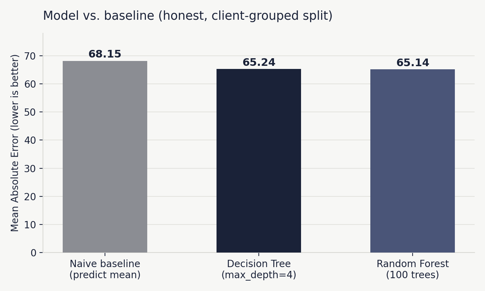
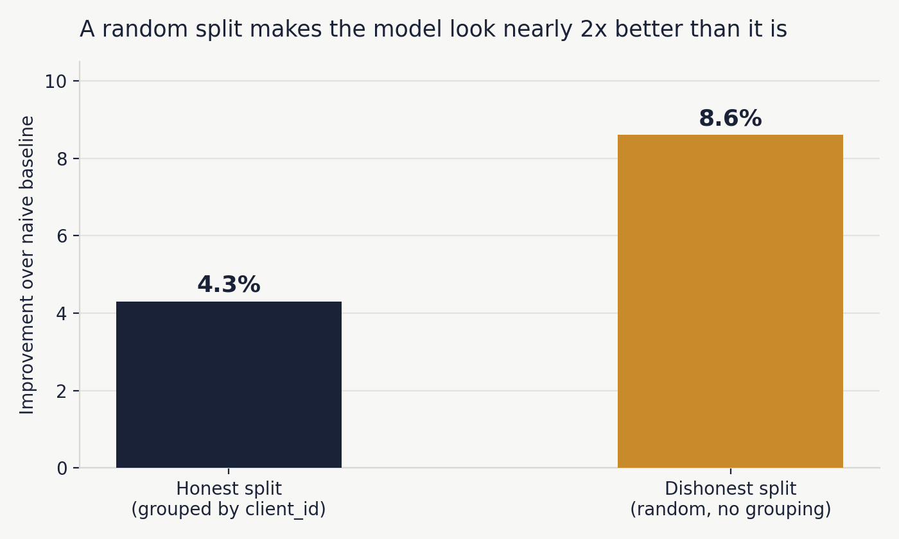
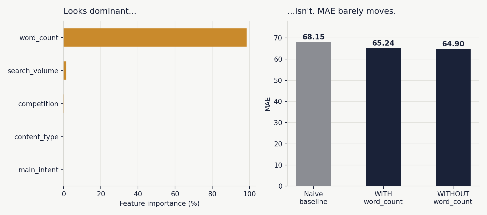

Finding pages that rank well and still lose the click — a FlyRank content opportunity study
Imagine a page sitting at the top of search results, earning 429 real impressions over three months — enough traffic to trust the signal isn't a fluke — yet not a single visitor clicks through.
This isn't a rare glitch: nine pages in this dataset show the exact same pattern, all ranking well, all genuinely visible, all getting zero clicks. For FlyRank's content team, patterns like this matter because they're easy to miss in a sea of thousands of pages — no single alarm goes off when a page quietly earns visibility without ever converting it into a visit.
Rather than manually scanning the full dataset trying to spot pages like this one, the content team can start from a ranked, evidence-backed shortlist and decide, page by page, what's worth fixing first.
This analysis uses the FlyRank ML Internship starter dataset: 30,000 rows, one row per (pseudonymized) content page, spread across 32 clients, with trailing 90-day performance metrics (impressions, clicks, CTR, and related fields) as of a single snapshot — not a time series.
Both content_id and client_id are pseudonyms, used only for grouping and train/test splitting — never as model features.
Two columns, trend_direction and the label derived from it, were excluded from anything used as a model input, since both are computed from trend_pct — including them as features would leak the target into itself.
FlyRank also provides a much larger warehouse release (~79 million rows, spanning 17 months across 519,606 content items) which was explored early in the internship to understand FlyRank's data landscape, but was not used in this analysis — all results here come from the 30,000-row starter dataset only.
No client names, raw search queries, or identifying information appear in this dataset or anywhere in this paper — all fields are pre-anonymized by FlyRank.
Assumptions: a page is worth manual review if it is (1) genuinely visible in search, (2) not just stale/abandoned content, and (3) meaningfully underperforming its expected CTR for its position.
| Gate | Rule |
|---|---|
| Visible | impressions_90d >= 81 |
| Stale | freshness_tier == '181+' |
| Low CTR | ctr_gap <= -0.5 |
Score formula: ctr_gap.abs() × impressions_90d, where ctr_gap is each page's CTR minus the mean CTR for its position tier. This rewards pages that are both badly underperforming and highly visible. This produced 9 flagged pages — all with ctr = 0.0 despite real impressions, all in position_tier = page_1.
Label: trend_pct, clipped at the 1st/99th percentile in the training set only — necessary because an uncapped Decision Tree scored worse than the naive baseline (77.86 vs. 68.15 MAE). A handful of extreme outlier pages were distorting the tree's splits away from accuracy on typical, everyday pages. Capping was not a preference but the difference between a useful model and a useless one. Test data was left uncapped.
Features: search_volume, competition, content_type, main_intent, word_count (one-hot encoded).
Model: Decision Tree Regressor (max_depth=4), chosen over a Random Forest — comparable MAE, but the shallow tree is directly traceable branch-by-branch, which matters when the reader making a decision from this work is a non-ML content strategist, not a data scientist.
GroupShuffleSplit on client_id, not a plain random split, so pages from the same client never appear in both train and test.trend_direction and its derived label were correctly excluded as features.word_count showed 98.4% importance; a with/without test confirmed this is a structural artifact of a shallow tree, not evidence of leakage.Both models beat the naive baseline, but only modestly. The Random Forest's added complexity bought essentially no improvement over the single Decision Tree.
| Model | MAE | Improvement |
|---|---|---|
| Naive baseline | 68.15 | — |
| Decision Tree (capped) | 65.24 | 4.3% |
| Random Forest (capped) | 65.14 | 4.4% |

A plain random split (no client grouping) makes the same model look nearly twice as good as it really is:

The 4.3% figure is the one that reflects real-world deployment — performance on clients the model has never seen — and is the number reported as this project's result. The 8.6% figure is reported only to demonstrate why the grouped split was necessary.

The model's largest errors occur on pages with extreme real trend_pct values — an expected consequence of capping the training target, not a flaw. A second, more instructive error type appeared on an ordinary page that received a wildly high prediction, traced to the model's heavy reliance on word_count — confirmed as a shallow-tree structural artifact, not genuine predictive signal.
Feature importance is misleading, not a real signal: the Decision Tree assigns 98.4% of its importance to word_count, but a controlled with/without test showed removing it barely changes MAE (65.24 → 64.90). This reflects a structural artifact of a shallow tree, not a real driver of performance.
Capping limits prediction on extreme cases: necessary to make the model useful at all, but it means the model cannot meaningfully predict pages with genuinely extreme trend_pct values — a known, accepted tradeoff.
Precision@K comparison was inconclusive on the held-out split, due to the rule's intentional selectivity at small scale — not a failure of either method.
The flagged shortlist is narrow, not representative. All 9 flagged pages share the same content type (keyword article) and position tier (page one), and over half belong to a single client. The rule has not been validated on other content types, position tiers, or a broader client base.
Sample size and generalizability: this analysis is built on a 30,000-row, 32-client snapshot — a small slice of FlyRank's full warehouse (~520,000 content items across roughly 100 clients). Patterns confirmed here are real within this sample, but haven't been tested against the full client base.
Detection, not prescription: this work flags pages worth reviewing — it does not test or prove that title/meta description rewrites (or any other fix) will recover engagement. The 9 flagged pages are candidates for review, not a guaranteed list of fixable pages.
Nine pages passed all three gates in the 30,000-row snapshot. All nine have ctr = 0.0 — zero clicks despite real search impressions. Ranked by score (|ctr_gap| × impressions_90d), highest priority first:
| Rank | Impressions (90d) | Reason | Action |
|---|---|---|---|
| 1 | 429 | Visible, Stale, Low CTR | Needs review |
| 2 | 265 | Visible, Stale, Low CTR | Needs review |
| 3 | 198 | Visible, Stale, Low CTR | Needs review |
| … | … | … | … |
| 9 | 81 | Visible, Stale, Low CTR | Needs review |
The ranking reflects wasted opportunity, not just failure: a page with 429 impressions and zero clicks represents more lost visibility than a page with 81 impressions and zero clicks, even though both trip the same three gates.
Before acting on any flagged page: confirm the page still matches this profile (data is a trailing-90-day snapshot), read the page against its target query (a mismatched intent needs a content rewrite, not a title tweak), and rule out non-title causes for zero clicks — bot traffic, tracking issues, or a SERP snippet problem can produce the identical pattern. No rewrite should be auto-published without human review, and no page should be promised a specific traffic improvement.
ctr_gap is computed relative to the mean CTR within a page's position tier, it is not a fixed measurement — it shifts whenever the underlying population shifts (new clients onboarded, content mix changes, seasonal swings). Other signals worth watching: the 81-impression threshold losing meaning if overall traffic shifts significantly, a page that's rewritten but stays flagged weeks later, and a client's content mix moving away from the keyword-article pages this rule was validated on.
All code, notebooks, and the raw dataset used in this analysis are available in the project repository: github.com/YoussefAli07/flyrank-ml-internship-starter.
Relevant notebooks: w05_model.ipynb (model training and baseline comparison), w06_validation_audit.ipynb (honest validation and leakage checks), w07_action_playbook.ipynb (ranked recommendations), and capstone.ipynb (full pipeline, mirrors this paper section-by-section).
All models use random_state=42 for reproducibility. To rerun: clone the repo, install pandas and scikit-learn, and run each notebook top to bottom.
Built on the FlyRank ML Internship dataset.
Learn more at flyrank.ai.